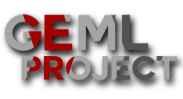

GEML Project - Wherry Lines and GEML
We sadly have delayed "Wherry Lines Project". We didn't want to do this but we lost motivation for the project. It will return. But at a later date.
In it's place we are making a new project. GEML Project. We are happy to say this project is going well, we cannot wait to show you all this update.
We would love to thank you all for the support with WLP and we hope to see the same support with GEML.
If you would like to see the progress with GEML, you join the discord server by clicking here.